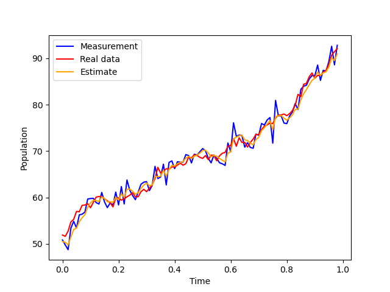
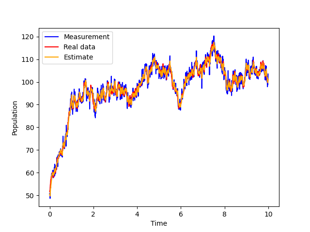

Here we have the Python implementation of discrete discrete Kalman filter (for nonlinear models is the extended Kalman filter). The repository is located at
https://github.com/mannyray/KalmanFilter
The examples here mirror the matlab examples.
Example 1
The example is located in python_implementation/discrete_discrete/examples/logistic.py. You can cd into the directory and then run python logistic.py. We will describe the script here in detail:
import sys
sys.path.insert(0,'..')
from ddekf import *
import numpy as np
Import the ddekf library from the parent directory as well as numpy. Implementation here uses numpy. Next, we set the seed for reproducability:
Define the nonlinear discrete logistic growth model and its Jacobian function:
rate = 0.01
max_pop = 100.0
def func(x,t):
return x + rate*x*(1 -(1/max_pop)*x)
def jacobian_func(x,t):
return 1 + rate - (2*rate/max_pop)*x
For linear functions, the implemenation is equivalent to regular Kalman filter, for nonlinear functions this is the extended Kalman filter. Define the initial estimate x_0, estimate's covariance matrix P_0, process noise matrix Q, sensor noise matrix R and observation matrix C:
x_0 = np.zeros((1,1))
x_0[0][0] = max_pop/2
P_0 = np.array([[1]])
Q = np.array([[1]])
R = np.array([[3]])
C = np.array([[1]])
For accuracy, the implementation of the Kalman filter relies on square root of matrices. We compute the square root matrix:
Q_root = np.linalg.cholesky(Q).transpose()
R_root = np.linalg.cholesky(R).transpose()
P_0_sqrt = np.linalg.cholesky(P_0).transpose()
Q_root = np.array([[1]])
The square root matrix A_sqrt of a matrix A is such that A = A_sqrt.dot(A_sqrt.transpose()). Next, we define our time steps (using start_time, finish_time and dt_between_measurements), the total amount of measurement_count and state_count/sensor_count describes dimensions of the true system state and the measurements:
start_time = 0
finish_time = 10
sensor_count = 1
state_count = 1
measurement_count = 1000
dt_between_measurements = (finish_time - start_time)/measurement_count
Next, we run a simulation where we generate a run of the logistic model and store in process_noise_data (with noise). From process_noise_data, we can generate the noisy measurements and store them in measurements. The process_noise_data will be used later to judge our filter's performance.
x = x_0
x_noise = x_0
ideal_data = []
process_noise_data = []
measurements = []
times = []
for ii in range(0,measurement_count):
current_time = ii*dt_between_measurements
times.append(current_time)
x = func(x,current_time)
ideal_data.append( x )
x_noise = func(x_noise,current_time) + Q_root.transpose().dot(np.random.randn(state_count,1))
process_noise_data.append(x_noise)
measurements.append(C.dot(x_noise) + R_root.transpose().dot(np.random.randn(sensor_count,1)))
Finally, we use measurements and our previously defined parameteres to run our Kalman filter:
estimates, covariances = ddekf( func, jacobian_func, dt_between_measurements, start_time, state_count, sensor_count, measurement_count, C, Q_root, R_root, P_0_sqrt, x_0, measurements)
Now we plot the results:
measurements_flat = [ x[0][0] for x in measurements ]
estimates_flat = [ x[0][0] for x in estimates ]
process_noise_data_flat = [ x[0][0] for x in process_noise_data ]
line1, = plt.plot(times,measurements_flat,color='blue',label='Measurement')
line2, = plt.plot(times,process_noise_data_flat,color='red',label='Real data')
line3, = plt.plot(times,estimates_flat[1:],color='orange',label='Estimate')
plt.legend(handles=[line1,line2,line3])
plt.ylabel('Population')
plt.xlabel('Time')
plt.plot()
plt.savefig('logistic2.png')
plt.show()
plt.close()
line1, = plt.plot(times[0:99],measurements_flat[0:99],color='blue',label='Measurement')
line2, = plt.plot(times[0:99],process_noise_data_flat[0:99],color='red',label='Real data')
line3, = plt.plot(times[0:99],estimates_flat[1:100],color='orange',label='Estimate')
plt.legend(handles=[line1,line2,line3])
plt.ylabel('Population')
plt.xlabel('Time')
plt.plot()
plt.savefig('logistic1.png')
plt.show()
plt.close()


Example 2
The example is located in python_implementation/discrete_discrete/examples/linear.py and has a model with two states. The result produced is in:
[[5.05404334e-07 2.45085320e-08]
[2.45085320e-08 4.98056883e-07]]